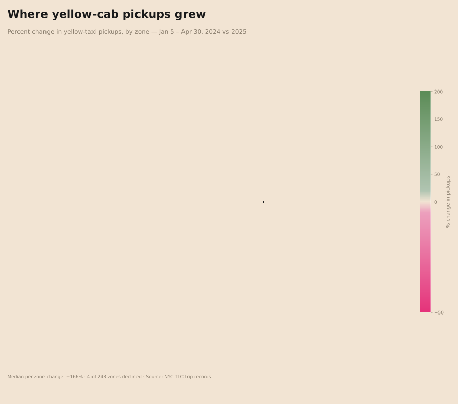

If fewer vehicles came in, where did the trips go?
The MTA crossings tell us about vehicles arriving from outside Manhattan. Yellow taxis tell us where people who are already moving around the city are going. Looking at 89 million yellow-cab trips before and after the cordon, the second story is more interesting than the first.
This number is unintuitive, and that's mostly because it's a median across 225 zones of wildly different sizes. Tiny zones with low baselines, empty cul-de-sacs, mostly-residential corners, lightly-served airport tails, can swing several hundred percent off a small base. The median is dominated by them.
The honest question, then, is: did taxi traffic actually grow citywide?
The increase grows with distance from the cordon
I sliced the city into concentric distance bands measured outward from the cordon edge, boundary, near, mid, far, and counted pickups in each.
| Distance from cordon | Pickups, before | Pickups, after | Change |
|---|---|---|---|
| Inside the cordon | 7.45 M | 8.57 M | +15.0 % |
| 0 – ¼ mi (boundary) | 4,149 | 4,315 | +4.0 % |
| ¼ – 1 mi | 2.15 M | 2.39 M | +11.4 % |
| 1 – 3 mi | 1.84 M | 2.16 M | +17.5 % |
| 3 – 5 mi | 558 k | 736 k | +31.9 % |
| 5+ mi | 686 k | 914 k | +33.2 % |
Two things stand out. First, every band grew, there's no "dispersion just outside the cordon," and no boundary band where pickups fell. Second, the boundary band itself grew the least (only +4 %), while the bands further from the cordon grew by 30 % or more. Whatever the policy did, it did not scatter taxi pickups along the cordon edge. It accelerated them in the outer-borough fringe.
Pickups grew almost everywhere, but unevenly

Almost every zone reads in shades of green. Only four zones stayed in the red, and three of them are airport zones, LaGuardia, Newark, and East Elmhurst, where yellow taxis are losing market share to for-hire vehicles regardless of any policy. The fourth is Central Park, where pickup volume is small and noisy. The "decline" story isn't the cordon's. The growth story is everywhere else.
The relationship changes from neighborhood to neighborhood
The first thing I tried was the simplest possible answer: fit one slope to the whole city. How much does pickup growth change for every additional mile from the cordon? The number that came back was roughly −5 percentage points per mile during the tolled hours: on average, the farther from the cordon, the smaller the increase.
That number explained about half the pattern. Just half. The other half wasn't about distance at all, it was about where in the city you were measuring.

So I let the model fit a different answer in every neighborhood. (The technique is called Geographically Weighted Regression. Instead of one slope for the whole city, you get one slope for every taxi zone, calculated from nearby observations.) The result is the map above. Each zone's color tells you how strongly distance from the cordon predicts pickup growth in that specific neighborhood.
The range is wild: from −39 to +176 across the 243 zones. Lower Manhattan and the Hudson waterfront read near zero, or slightly negative. Outer Brooklyn, Queens, the Bronx, and Staten Island read strongly positive, the farther from the cordon, the more pickups grew there. Roughly half of all zones (137) show effects clearly distinguishable from zero. The other half are smaller and noisier.
A single number can't represent that. From here on, the investigation has to be local.
Yellow cabs are one slice of the city's traffic
Everything in this chapter is yellow-taxi pickups only. The dataset does not include for-hire vehicles, Uber, Lyft, Via, which outnumber yellow cabs by roughly four to one in NYC. Some of the growth in outer-borough zones may be yellow cabs reaching further to capture fares that the FHV fleet would have served. That looks like spillover here; it's partly a supply-side response by drivers, not just a demand-side response by passengers.
It also doesn't tell us anything about private cars, the actual target of the cordon toll. For that, we need other datasets.
Yellow-taxi pickups grew almost everywhere, and grew the most outside the cordon. But yellow cabs are a fraction of NYC's traffic. Did the trips that weren't taxis go up too?